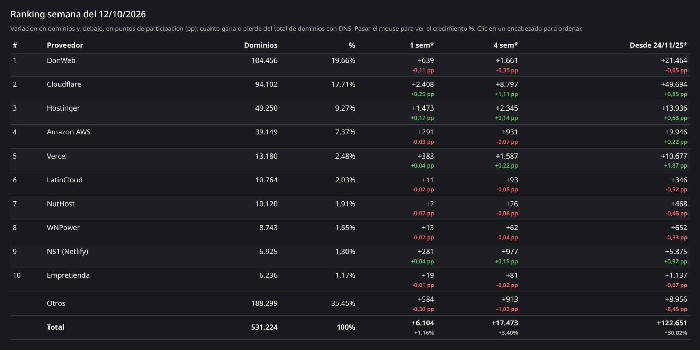
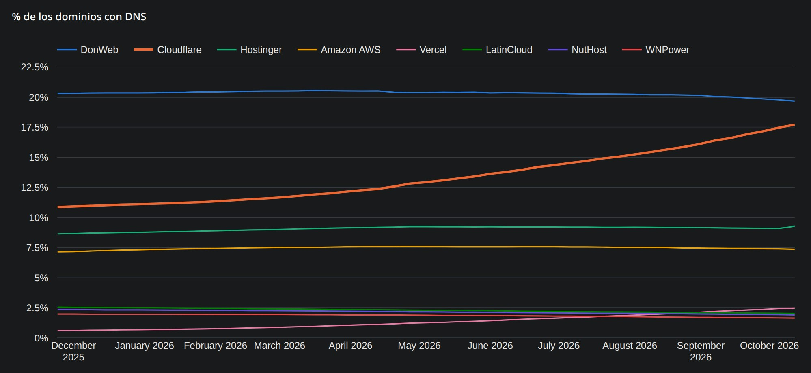
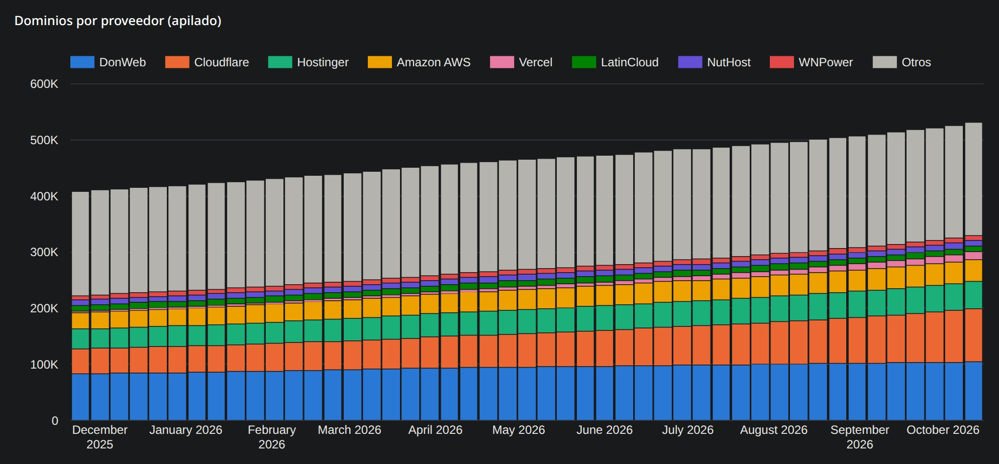
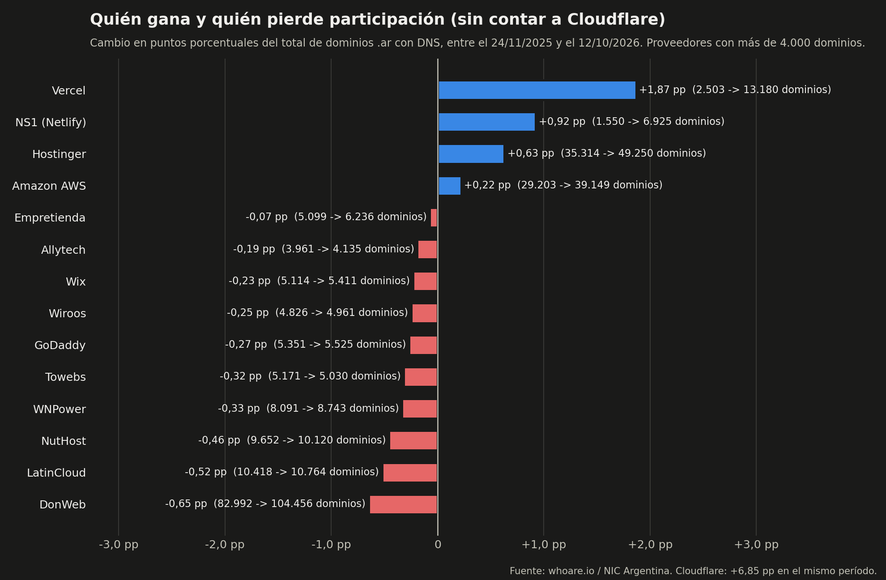

Cloudflare será el nuevo jefe de los dominios argentinos
Informe de situación a la semana del 12 de octubre de 2026. Miramos los servidores de nombres (DNS) de los 531.224 dominios .ar que tienen DNS delegado y contamos quién los gestiona, semana a semana.
La noticia: Cloudflare está a punto de pasar a DonWeb como el proveedor que más dominios argentinos resuelve.

pp = puntos porcentuales de participación: cuánto del total gana o pierde cada proveedor.

Cloudflare duplicó sus dominios en diez meses
Desde fines de noviembre de 2025 Cloudflare pasó de 44.408 a 94.102 dominios .ar (+112%) y de 10,9% a 17,7% del total. En el mismo período DonWeb creció en cantidad (+21.464) pero perdió participación (de 20,3% a 19,7%).
De los 122.651 dominios netos que se sumaron en ese período, 4 de cada 10 eligieron Cloudflare.
La distancia hoy es de 10.354 dominios (1,95 puntos). En el último mes Cloudflare le descontó a DonWeb unos 1.800 dominios por semana. Si el ritmo sigue, el cruce sería hacia fines de noviembre de 2026.

DonWeb sigue siendo el número uno (en lo que importa para ellos)
Que Cloudflare pase a DonWeb en DNS no quiere decir que se quede con el negocio de los dominios argentinos:
- Cloudflare no vende dominios .ar. Los dominios se registran en NIC Argentina, directamente o a través de proveedores como DonWeb. Después, el titular delega el DNS a Cloudflare.
-
DNS no es hosting. Muchos de esos 94.000 sitios siguen alojados en DonWeb, Hostinger u otro proveedor y usan Cloudflare adelante como DNS, CDN y certificado gratuito. Es coherente con lo que vimos en abril: el 21,5% de los sitios ya respondía con el encabezado
server: cloudflare(Tecnología detrás de 600.000 dominios argentinos). - El plan gratuito es la puerta de entrada. DNS rápido, SSL y protección básica sin costo es una oferta difícil de igualar para un hosting local.
Entonces: DonWeb sigue siendo donde la gente compra y aloja, pero cada vez más dominios argentinos le entregan las llaves (quién responde por el dominio) a Cloudflare.
Lo que más nos llama la atención
- Concentración. DonWeb y Cloudflare juntos ya resuelven el 37% de los dominios .ar, y los 10 primeros pasaron de 56% a 65% del total. Todos los demás proveedores juntos perdieron 8,4 puntos desde noviembre.
Además de Cloudflare: quiénes crecieron

- Vercel se multiplicó por 5: de 2.503 a 13.180 dominios (+1,87 puntos) y ya es el quinto proveedor de DNS de los dominios .ar.
- NS1, usado principalmente por Netlify, creció 4,5 veces: de 1.550 a 6.925 dominios (+0,92 puntos) y entró al top 10. NS1 (hoy de IBM) es el servicio sobre el que funciona Netlify DNS y también da DNS a otras empresas, pero en los dominios .ar casi todo es Netlify: en una muestra de 35 dominios con NS1 que responden, 33 estaban alojados en Netlify.
- Hostinger sumó 13.936 dominios (+39%, +0,63 puntos) y se consolida tercero.
- Amazon AWS sumó 9.946 (+34%, +0,22 puntos).
Vercel y Netlify son plataformas donde se despliegan sitios hechos con frameworks modernos: son proyectos que nacen en la nube y nunca pasan por un hosting tradicional. Junto con Cloudflare, se llevan más de la mitad del crecimiento del período (54%).
Quiénes perdieron
Casi todos los demás proveedores relevantes suman dominios, pero crecen menos que el mercado y pierden participación:
- DonWeb es el que más puntos pierde (-0,65), aunque sumó 21.464 dominios (+26%).
- Los hostings argentinos medianos retroceden: LatinCloud (-0,52), NutHost (-0,46), WNPower (-0,33) y Towebs (-0,32). Towebs es el único de ellos que además perdió dominios (de 5.171 a 5.030).
- GoDaddy, Wiroos y Wix pierden entre 0,23 y 0,27 puntos cada uno.
- En cantidad, la caída más fuerte entre los proveedores con más de 2.000 dominios es la de Mercado Libre: de 2.230 a 1.290 dominios (-42%).
Para tener perspectiva: en marzo de 2015 hicimos un relevamiento parecido (DNSs usados en Argentina). Cloudflare ya existía y tenía 918 dominios .ar, el 0,28% de los que tenían DNS. Hoy son más de 94.000.
Cómo medimos
- No tenemos el 100% de los dominios argentinos. Relevamos la gran mayoría de los dominios .ar vigentes (NIC declaraba 697.130 en abril de 2026) y volvemos a consultar cada uno periódicamente, así que esto es una muestra muy amplia y representativa, no un censo exacto.
- Para cada dominio .ar tomamos su primer servidor de nombres y lo asignamos a una empresa (por ejemplo,
*.ns.cloudflare.comes Cloudflare). Los servidores que todavía no identificamos con ninguna empresa se suman en "Otros". Los datos salen de las lecturas whois de whoare.io. - Arrancamos en noviembre de 2025 a propósito: entre mediados de 2022 y septiembre de 2025 nuestras lecturas fueron irregulares, y las series de esos años no son comparables.
¿Tu dominio está en Cloudflare?